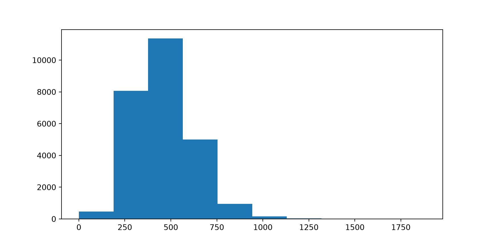
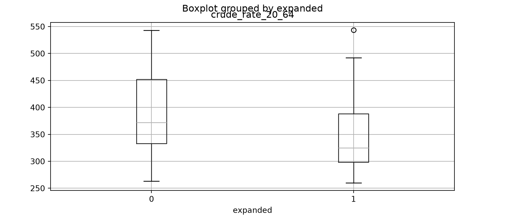
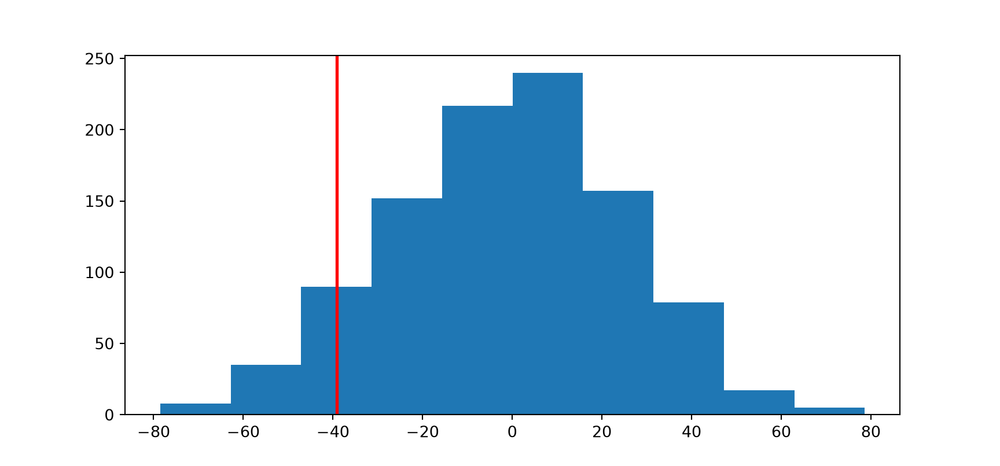

4You learn Python today by doing statistics: a junior version of the whole game, start to finish.
What you will learn
Twenty-eight functions and methods, and that is the whole list.
It is not a crash course in Python programming, or in hypothesis testing.
Did states that expanded Medicaid in 2014 have lower working-age mortality than states that did not?
Explore: What does mortality look like across states that expanded Medicaid and those that did not? → plt.hist(), .boxplot(), group means
Test: Is the difference in these states bigger than chance would produce? → stats.ttest_ind()
Check: does the answer to our second question depend on unreasonable assumptions? → permutation test
Extend: how can we formally express and model these differences? → smf.ols("rate ~ expanded")
| Module 1 | I do | I drive. You type every line with me. |
| Module 2 | We do | Pairs. Most of the code is given; you write the four that matter. |
| Module 3 | You do | On your own. Nine steps, no code. |
The analysis is the same shape all three times. That is deliberate, because by the third pass, the shape is yours.
Type it, don’t read it. Type each code block into your script:
What prints underneath (4) is Python’s answer. Don’t type that.
Errors are part of learning. I will make several on purpose. You will make more by accident. That never stops, for anyone.
Red sticky = stuck. Green = through. Put the red one up early.
You set this up before today with scripts/00-check.py. Now:
intro-to-python folder.venvscripts/01-i-do.py and run a line with Cmd+Enter (Mac) / Ctrl+Enter (Windows)Open the folder, not a file: it keeps every file path short. No You're ready. before today? Red sticky now.
Every line today is built from two kinds of thing: objects and functions.
Python on its own does not know about tables, plots, or statistics. Those live in libraries, and you load the ones you need at the top of every script.
import pandas as pd loads pandas under a short nickname: pd. means the pandas version of. Everyone uses these same five nicknames.
pd.read_csv("data/medicaid.csv", index_col=0)
pd. says where the function lives: in pandas, the table library, which we just loaded under the short name pd.
read_csv is the function name. It says what you want done.
( ) holds everything the function needs to know.
"data/medicaid.csv" is the first argument: which file to read.
index_col=0 is a named argument: treat the first column as row labels, not data. (Python counts from 0, so column 0 is the first.)
, separates one argument from the next.
Two questions get you through any function: what do I want Python to do, and what does Python need to know to do it?
Nothing printed. That is what success looks like: = stores silently.
Look at the Variables pane. counties is now in it.
Index(['state', 'county', 'county_code', 'year', 'population_20_64', 'yaca',
'perc_white', 'perc_hispanic', 'perc_female', 'crude_rate_20_64',
'unemp_rate', 'poverty_rate', 'median_income'],
dtype='str') state county county_code year population_20_64 yaca \
1 AL Autauga County, AL 1001 2009 31271 NaN
2 AL Autauga County, AL 1001 2010 31875 NaN
3 AL Autauga County, AL 1001 2011 32538 NaN
perc_white perc_hispanic perc_female crude_rate_20_64 unemp_rate \
1 80.429152 2.078603 51.482204 412.522785 8.905110
2 80.445490 2.240000 51.381961 423.529412 8.808109
3 79.568505 2.311144 51.146352 482.512754 8.345908
poverty_rate median_income
1 11.2 53.081
2 11.9 53.049
3 14.9 48.863 Ask these of every new dataset: how big, what columns, what’s a row.
The dot means belonging to: counties.shape is the shape of counties. With parentheses, .head(3) does something; it is a method. Without them, .shape just looks something up; it is an attribute.

Never test a variable you have not looked at. Defaults are fine; we are not decorating anything yet.
plt.figure() starts a fresh picture and plt.show() shows it. Skip plt.figure() and your next plot lands on top of this one.
[" "]?plt.hist(counties["crude_rate_20_64"])
You have not seen square brackets used like that before. Don’t look it up yet.
Use what is already on the screen:
counties is the table you just read in"crude_rate_20_64" was in the list .columns printed[" "] has to pick one of its columns out of a tableUse the context clues. Read around the unfamiliar piece first, guess what it has to be, then check. Faster than looking it up cold, and it sticks.
plt.hist(counties["crude_rate_20_64"]) has two steps, and the inner one happens first.
counties["crude_rate_20_64"] pulls the column out. On its own it is a Series: one number per county.plt.hist() draws that Series.“Take the
crude_rate_20_64column out ofcounties, and draw a histogram of it.”
Did states that expanded Medicaid in 2014 have lower working-age mortality than states that did not?
What do we need to do to our data before we can answer that?
1. Aggregate. Expansion is a state policy, so we need one mortality rate per state, for 2014.
2. Deal with the NAs. How is the policy recorded right now?
yaca is the year a state expanded; NaN (missing) means never. We need a clean 1 or 0.
3. Weight by population. The smallest and largest counties in 2014:
people aged 20-64 deaths % who died
county
Arthur County, NE 224 0 0.000%
Los Angeles County, CA 6,298,815 15,397 0.244%Averaging county rates gives these two the same vote. Is that a reasonable comparison?
Square brackets with a True/False test inside keep the rows where the test is True. == asks is this equal to?: a question, so it is doubled.
d2014 = counties[counties["year"] == 2014]
Longer lines are still one sentence. Start at the right:
counties[counties["year"] == 2014] says from counties, keep the rows where year is 2014 …= says … and store it …d2014 says … as d2014.“From
counties, keep the rows whereyearis 2014, and store that asd2014.”
If you can say a line out loud, you understand it. If you cannot, stop and ask.
d2014["expanded"] = np.where(d2014["yaca"].notna() & (d2014["yaca"] == 2014), 1, 0)
d2014["expanded"].value_counts()expanded
0 1337
1 1035
Name: count, dtype: int64np.where(test, value_if_true, value_if_false) runs down the whole column.
Note the square brackets doing a second job: on the left of = they create a column rather than pulling one out.
.notna() guardA missing value answers False to every comparison, so NaN == 2014 quietly lands in the 0 group. The guard says so out loud: not missing, and equal to 2014.
The Help pane lists every argument and its default: Series.mean(*, axis=0, skipna=True, ...). So pandas skips missing values unless you say otherwise.
One pattern does most of the work today.
data.groupby(x)[y].goal()
Read groupby(x), by=x, and ~ x as “broken down by”.
states.groupby("expanded")["rate"].mean() |
group means |
states.boxplot(column="rate", by="expanded") |
a picture |
smf.ols("rate ~ expanded", data=states) |
a model |
The t-test is the odd one out: it wants the two groups handed over one at a time.
A rate is deaths over people. To get a state’s rate, turn each county’s rate back into deaths, add up the deaths and the people by state, and divide once.
d2014["deaths"] = d2014["crude_rate_20_64"] * d2014["population_20_64"] / 1e5
states = d2014.groupby(["state", "expanded"],
as_index=False)[["deaths", "population_20_64"]].sum()
states["crude_rate_20_64"] = states["deaths"] / states["population_20_64"] * 1e5
states = states.sort_values("state")
states.shape(39, 5)The template again: d2014.groupby(x)[y].sum(), where x is state and expansion status and y is deaths and population. Two of each, so both go in a list, [ ].
Sorting changes nothing today, but the shuffling in step 7 depends on row order. Make the order a decision you can see.
plt.hist(counties["crude_rate_20_64"])
“Take the crude_rate_20_64 column out of counties, and draw a histogram of it.”
d2014 = counties[counties["year"] == 2014]
“From counties, keep the rows where year is 2014, and store that as d2014.”
d2014.groupby("state")["population_20_64"].sum()
“Using d2014, add up population_20_64 broken down by state.”
d2014["deaths"] = d2014["crude_rate_20_64"] * d2014["population_20_64"] / 1e5
“Multiply each county’s rate by its population, divide by 100,000, and store the result as a new column called deaths.”
states["expanded"].value_counts()
“Take the expanded column out of states, and count how many of each value there are.”
high_pov = states[states["poverty_rate"] > 20]
“From states, keep the rows where poverty_rate is above 20, and store that as high_pov.”
states.groupby("expanded")["poverty_rate"].mean()
“Using states, average poverty_rate broken down by expanded.”
states["big"] = np.where(states["poverty_rate"] > 20, 1, 0)
“Test whether each state’s poverty_rate is above 20, give it 1 if yes and 0 if no, and store that as a new column called big.”

expanded
0 390.166064
1 350.988408
Name: crude_rate_20_64, dtype: float64.boxplot() starts its own fresh picture, so no plt.figure() this time.
group_means = states.groupby("expanded")["crude_rate_20_64"].mean()
diff_obs = group_means[1] - group_means[0]
diff_obsnp.float64(-39.177656336384814)Expansion states averaged about 39 fewer deaths per 100,000 working-age people.
Is that more than luck would hand us?
group_means[1] is the row labelled 1: the expanded states. np.float64(...) is numpy saying what kind of number this is. The number is the part inside.
result = stats.ttest_ind(states["crude_rate_20_64"][states["expanded"] == 1],
states["crude_rate_20_64"][states["expanded"] == 0],
equal_var=False)
resultTtestResult(statistic=np.float64(-1.5434721815517884), pvalue=np.float64(0.13180569962554284), df=np.float64(34.632273771767))ConfidenceInterval(low=np.float64(-90.72705983416654), high=np.float64(12.371747161396911))Read all of it. The interval tells you the size of the gap the data supports. The p-value never does.
equal_var=False asks for Welch’s t-test, which does not assume the two groups are equally spread out.
We computed diff_obs = −39. The interval says −91 to +12. Same sign.
ttest_ind(a, b) subtracts a − b, and we handed it the expanded states first: group 1 − group 0, the same way round as diff_obs.
Swap them and every sign flips, with no warning. When a sign looks wrong, check which way round the subtraction went.
Most of us walk in carrying this one:
“p is the probability the result is due to chance.”
It has the logic backwards.
It assumes chance is all there is, and then asks:
if expansion made no difference at all, how often would luck alone hand us a gap as big as ours?
We don’t have to trust a formula for this. We can just do it.
rng = np.random.default_rng()
shuffled = rng.permutation(states["expanded"])
(states["crude_rate_20_64"][shuffled == 1].mean() -
states["crude_rate_20_64"][shuffled == 0].mean())np.float64(-37.74574697362232)rng is a random number generator: the thing that does the shuffling. Run it again:
shuffled = rng.permutation(states["expanded"])
(states["crude_rate_20_64"][shuffled == 1].mean() -
states["crude_rate_20_64"][shuffled == 0].mean())np.float64(-9.621431079807053)That bouncing is sampling variation. You are looking straight at it.
The seed, 2026, makes the shuffling repeatable. for i in range(1000): runs the indented lines 1000 times; .append() keeps each answer. The indent is the grouping, so line it up exactly.

A p-value you built out of shuffling and counting.
The t-test said 0.132. Not identical, and it shouldn’t be: 1000 shuffles is itself a sample. Same conclusion: not distinguishable from chance with 39 states.
abs() |
drops the minus sign, so we count both tails: past −39 and past +39. That is what “two-sided” means, and it is what ttest_ind() did. |
>= |
gives a True/False for each of the 1000 shuffles |
.mean() |
of True/False gives the proportion that are True, because True counts as 1 |
OLS Regression Results
==============================================================================
Dep. Variable: crude_rate_20_64 R-squared: 0.060
Model: OLS Adj. R-squared: 0.035
Method: Least Squares F-statistic: 2.380
Date: Tue, 29 Sep 2026 Prob (F-statistic): 0.131
Time: 12:55:18 Log-Likelihood: -224.55
No. Observations: 39 AIC: 453.1
Df Residuals: 37 BIC: 456.4
Df Model: 1
Covariance Type: nonrobust
==============================================================================
coef std err t P>|t| [0.025 0.975]
------------------------------------------------------------------------------
Intercept 390.1661 19.075 20.454 0.000 351.516 428.816
expanded -39.1777 25.397 -1.543 0.131 -90.637 12.282
==============================================================================
Omnibus: 4.688 Durbin-Watson: 1.769
Prob(Omnibus): 0.096 Jarque-Bera (JB): 4.369
Skew: 0.809 Prob(JB): 0.113
Kurtosis: 2.738 Cond. No. 2.80
==============================================================================
Notes:
[1] Standard Errors assume that the covariance matrix of the errors is correctly specified.smf.ols() sets the model up, outcome ~ predictor. .fit() fits it. print() lays the table out.
Both on the expanded row:
coef |
−39.18 | our difference in means, exactly |
P>|t| |
0.131 | our p-value |
Intercept, on the row above, is the mean of the group coded 0: the baseline. Everything else answers questions we haven’t asked.
A difference in means is a regression coefficient. t-test, permutation test, and regression: three ways of asking one question, and they agree.
stats.ttest_ind(d2014["crude_rate_20_64"][d2014["expanded"] == 1],
d2014["crude_rate_20_64"][d2014["expanded"] == 0],
equal_var=False).pvaluenp.float64(5.687913728799441e-17)That is the same test, run on the counties.
p is about 6e-17. Overwhelming, and wrong.
It thinks it has 2,372 independent observations. It has 39: every county in a state shares one policy decision.
When a p-value looks too good, ask how many independent things you actually measured.
| Step | What you did | With |
|---|---|---|
| 1–2 | Load tools, read the data | pd.read_csv() .head() |
| 3 | Look at the outcome | plt.figure() plt.hist() plt.show() |
| 4 | Get the data ready | np.where() .notna() .isna() .value_counts() .groupby() .sum() .sort_values() |
| 5 | Describe | .boxplot() .mean() |
| 6 | Test | stats.ttest_ind() .confidence_interval() |
| 7 | Check | np.random.default_rng() .permutation() range() .append() np.array() plt.axvline() abs() |
| 8 | Model | smf.ols() .fit() .summary() print() |
| Module 2 | Split at the median | .median() |
Twenty-eight functions and methods: a difference in means, a permutation test, and a regression, plus the reason to distrust one of them.
Get data, look at it
pd.read_csv() |
read a spreadsheet off disk |
.head() |
show the first few rows |
Pictures
plt.figure() |
start a fresh, blank picture |
plt.hist() |
distribution of one variable |
.boxplot() |
compare groups |
plt.axvline() |
add a vertical line to the picture |
plt.show() |
show the picture |
Build a grouping variable
np.where() |
test each value, return 1 or 0 |
.notna() / .isna() |
is this value present / missing? |
.value_counts() |
count how many in each category |
Summarise
.groupby() |
split a table by group; what follows runs on each |
.mean() |
average, and on True/False a proportion |
.sum() |
add up |
.median() |
the middle value |
abs() |
drop the minus sign |
.sort_values() |
sort the rows by a column |
Test and model
stats.ttest_ind() |
compare two group means |
.confidence_interval() |
the interval for that difference |
smf.ols() |
set up a linear model, y ~ x |
.fit() |
fit it |
.summary() |
the model’s coefficient table |
print() |
lay that table out properly |
The permutation test
np.random.default_rng() |
a random number generator; give it a seed to repeat it |
.permutation() |
shuffle into a random order |
range() |
the numbers 0 to n − 1, for a loop to count through |
.append() |
add an answer to the end of a list |
np.array() |
turn a list into an array, so maths works on all of it |
Look something up (attributes: no parentheses)
.shape |
how many rows and columns |
.columns |
what are the columns called |
.pvalue |
just the p-value from a test |
Three more appear only in the finish-early extensions: plt.scatter(), plt.axline(), and the .params attribute. And help() works on all of them.
# |
everything after it is ignored | # this is a note |
import … as |
load a library under a nickname | import pandas as pd |
= |
store this as | x = 5 |
= |
name an argument, inside a function | data=states |
() |
run a function; what it needs goes inside | abs(x) |
, |
separates one argument from the next | plt.hist(x, bins=20) |
. |
belonging to: a library’s function, an object’s method or attribute | pd.read_csv, states.shape |
" " |
a string: text, taken as-is | "data/medicaid.csv" |
[" "] |
pull one column out of a DataFrame | states["expanded"] |
~ |
“broken down by”, inside a model formula | "rate ~ expanded" |
== |
is equal to: a question, not an instruction | year == 2014 |
>= <= > < |
the usual comparisons | diffs >= 64 |
& |
and; put each side in its own ( ) |
x.notna() & (x == 2014) |
: + indent |
the indented lines below belong together | inside the for loop |
= does both jobs, and you will see both. Python’s style guide writes the first with spaces (x = 5) and the second without (index_col=0). It makes the two jobs visible.
The one that catches everyone. Same symbol, four different meanings:
df["col"] |
pull one column out of a table | counties["year"] |
df[test] |
keep the rows where a test is True, in a table or a single column | counties[counties["year"] == 2014] |
s[label] |
pick one value by its label | group_means[1] |
["a", "b"] |
make a list; inside df[ ] it picks several columns |
[["deaths", "population_20_64"]] |
If you get a KeyError, read the last line of the message: it names what pandas could not find. It is almost always a column name spelled wrong.
Open scripts/02-we-do.py.
Do high-poverty states have higher working-age mortality?
______, fill it in.Two things you have not seen:
Making groups from a number. Poverty is continuous, so you split it at the median with np.where().
A result that runs off the page. Your red line may sit far out past the whole null distribution. That empty space is the result, not a drawing glitch.
If the p-value line gives you 0, that is not p = 0. None of 1000 shuffles got that far, so report p < 0.001.
Open scripts/03-they-do.py.
Do states with above-median unemployment have higher working-age mortality?
median_income. Does the story change?plt.scatter(), then plt.axline() with the slope from smf.ols(). What did the split cost?None of it is a prerequisite for what you did today. You can start Monday with twenty-eight functions and methods.
Always open the folder. Never write os.chdir("/Users/you/..."). It works on exactly one computer, and not for long. Open the project folder and every path in your script stays relative.
Never use %reset to start clean. It deletes your variables, but libraries stay loaded and any settings you changed stay changed. It does not give you a clean session. Restart Python instead: Cmd/Ctrl+Shift+0.
If a script only runs after you have run some other thing first, it isn’t finished.
help(pd.Series.mean) |
Python’s own help, and it is better than it looks |
| StatLab office hours | a human, free, and the fastest option |
| Error message → search | paste the last line verbatim, someone has had it |
Your script from today is the best reference you now own. It works, you typed it, and you know what every line does.
"data/medicaid.csv"
" " make it a string: text, taken as-is. Without them, Python reads medicaid as the name of an object, goes looking, and fails.
data/ is a folder. Folder, slash, file: that is a path, directions to the file, starting from the folder you opened.
medicaid.csv is the file itself.
.csv is the extension: what kind of file it is. Comma-separated values, a table saved as plain text. pd.read_csv() reads this kind; an Excel .xlsx needs a different function. Finder and File Explorer hide extensions by default, so you may only see medicaid there.
The full path to the same file, on two laptops:
| Mac | /Users/you/intro-to-python/data/medicaid.csv |
| Windows | C:\Users\you\intro-to-python\data\medicaid.csv |
data/medicaid.csv starts from the folder you opened, so it is the same on every laptop./, even on Windows. A lone \ can silently turn into a special character: in "data\new.csv", the \n becomes a line break, and Python goes looking for a file that does not exist. / never does that.For anyone who arrives without a working setup. These go in the Terminal (Terminal → New Terminal), not your script. Copy them from the README; don’t retype them.
Install uv, the tool that sets up Python for you:
Mac:
Windows:
Close that terminal (the trash-can icon) and open a new one, so it can find uv.
Run uv sync.
Pick the .venv Python in the top-right corner, then run scripts/00-check.py (Cmd/Ctrl+Shift+Enter). It should end with You're ready.
uv sync builds a .venv folder holding pandas, numpy, scipy, statsmodels, and matplotlib, in the versions this workshop was tested with. It downloads Python 3.12 for it if you need one. Already have a different Python, like 3.14? That’s fine: uv leaves it alone.